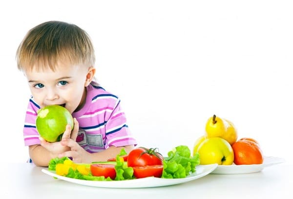
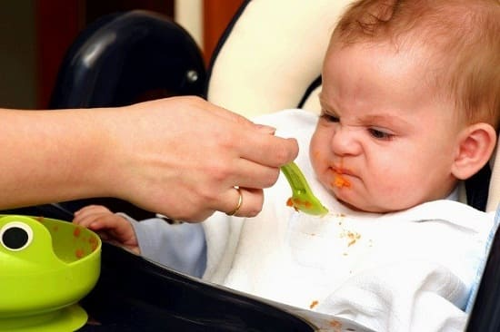
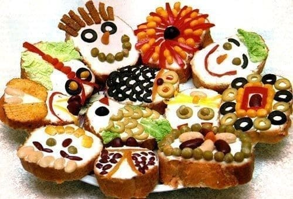
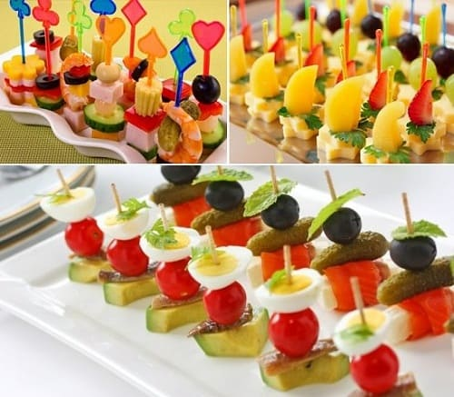

Три главные родительские проблемы, которые встречались в нашей практике, это:
Здесь мы займемся первыми двумя проблемами, так как больше всего родителей беспокоит, что ребенок не получает достаточно питательных веществ. Вот некоторые советы с кухни семьи Сирс о том, как с минимальными затратами времени на уговоры отправить в разборчивые маленькие рты самые полезные продукты.
ПЯТНАДЦАТЬ СОВЕТОВ, КАК НАКОРМИТЬ ПРИДИРЧИВОГО ЕДОКА
«Доктор, мой ребенок — такой разборчивый едок!» Мы слышим эту жалобу постоянно. Но стоит вам узнать основные принципы поведения малышей, питания и структуру роста, вы поймете, почему большинство двухлеток — разборчивые малоежки:

Такое беспорядочное питание может беспокоить родителей, но это нормально. Если вы суммируете питательную ценность съеденного ребенком за неделю, вы будете поражены тем, насколько его рацион в действительности сбалансирован. Малыши в возрасте от года до двух лет в среднем нуждаются в 1000—1500 калориях в день, но это не значит, что они ежедневно съедают столько. Вместо того чтобы переживать о сбалансированности блюда, попробуйте позаботиться о сбалансированности недельного рациона. Вот пятнадцать лучших советов по кормлению разборчивых едоков, собранных из нашей практики и семейной жизни:
1. Дайте погрызть. Это любимый способ семьи Сирс. Заполните каждое отделение формы для льда, формочек для маффинов или раздельного блюда маленькими порциями яркой, питательной еды. Назовите это приспособление «радужным обедом» (помните, кормление маленьких детей — это сочетание хорошей пищи и творческого подхода). Убедитесь, что оставили два отделения для соусов, куда пищу можно макать. С помощью присосок закрепите поднос на небольшом столике или стуле, или, если ваш ребенок достаточно взрослый, чтобы не устраивать беспорядок, просто установите поднос с «погрызушками» на его собственном столе. Поскольку ваш малыш ходит кругами по всему дому, в том числе и мимо своего стола, он будет останавливаться, грызть понемногу и продолжать свой путь. Учите его оставаться возле стола, когда он жует, а не бродить по дому с едой в руках. Вы можете также установить поднос на нижнюю полку холодильника, чтобы он мог сам доставать оттуда еду. Поищите поднос с нескользящим покрытием для еды во время движения, наподобие автомобильного.
Грызите вместе. Если ваш ребенок не сразу идет к подносу с «погрызушками», установите поднос между вами и грызите вместе. Продемонстрируйте ребенку, как забавно выбирать из красочного ассортимента, выставленного перед ним. Преувеличьте свой восторг от еды с подноса маленькими порциями, подавая ему сигналы «это весело есть». Нашим детям настолько нравилось пастись с таких подносов, что мы начинали пастись вместе с ними.

2. Назовите. Давайте продуктам на подносе описательные имена, притягательные для малыша:
3. Окуните. Малыши любят окунать и макать еду. На самом деле, приятнее есть не очень любимые продукты, макая их во что-то вкусное, например, в:
4. Намажьте. Малышей и маленьких детей процесс намазывания и размазывания приводит в восторг, так что позвольте им мазать питательные помадки (такие, как авокадо, сыр, мясной паштет, ореховые масла, овощную икру и фруктовые пюре) на цельнозерновые крекеры, рогалики, тосты или рисовые пирожки. Если вы поборник чистоты, следите, чтобы размазывание еды не захватывало другие поверхности.
5. Накройте. Закамуфлируйте незнакомые или нелюбимые продукты ложкой вкусной верхушки: плавленого или сливочного сыра, йогурта, гуакамоле, фруктовых пюре, томатного, мясного или яблочного соуса или орехового масла.
6. Выпейте. Ели ваш ребенок предпочитает еде питье, приготовьте ему смузи из йогурта, взбитого со свежими фруктами.
7. Высококалорийные продукты. Подсчитайте калории. Предложите ребенку высококалорийные продукты, питательные и небольшого объема. Самые питательные — продукты со здоровыми жирами. Вот двенадцать высококалорийных продуктов, которые больше всего нравятся малышам:
8. Промаслите. Здоровые масла, такие как льняное и оливковое, содержат много полезных жиров. Родителям, чьи дети действительно мало едят, мы рекомендуем ежедневно добавлять столовую ложку льняного масла в еду, например, в смузи или в овсянку. Или плесните немного оливкового масла на цельнозерновые макароны с соусом маринара.
9. Измельчите. Размелите орехи и семена в кофемолке в течение 10— 20 секунд — это сделает эти питательные, но небезобидные в плане легкости подавиться ими продукты безопасными для дошкольников. Добавьте столовую ложку этих самодельных «посыпок» в овсянку или в смузи:
10. Украсьте. Победитель на семейной кухне Сирс — блинчики с цуккини: цельнозерновые блинчики с цуккини, с глазами-горошинами, морковным носом, волосами из тертого сыра и улыбкой из стручковой фасоли.
СОВЕТ ДОКТОРОВ СИРС: НЕ НАДО СТАНОВИТСЯ ПИЩЕВЫМ ЗАНУДОЙ В стремлении хоть чем-нибудь накормить своего разборчивого едока родители часто начинают использовать продукты быстрого приготовления или дают ребенку, «мусорную еду» вместо «еды для роста». Сколько времени надо провести в чьем-нибудь доме, чтобы услышать, как мать уступает: «О, солнышко, тебе не нравится сегодняшняя еда? А что ты хочешь?» Хотя вы хотите, чтобы ребенок ел с удовольствием и без родительского нажима, но приходит время (обычно в возрасте около двух лет), когда вам придется вооружиться тем, что мы называем «нашим» принципом: «Это все, что у нас есть на обед!» Чем раньше вы начнете применять этот принцип, тем лучшего едока получите. |
Дети скорее съедят то, что они помогали готовить. Используйте кухонные приспособления для создания съедобных композиций из теста или кусков хлеба.
11. Посейте. Посадите сад вместе. Дети с больше охотой едят то, что они помогали выращивать.
12. Кормите, держа на коленях. Используйте колени как кресло. Если ваш ребенок проходит стадию отказа от еды в кухне или на высоком стуле, позвольте ему сидеть у вас на коленях и есть с вашей тарелки. Как почетный президент Семейного Клуба Наведения Беспорядка Сирс, Марта сочла полезным отодвинуть тарелку вне зоны захвата младенца, переложив несколько кусочков своей еды на стол перед ним. Это помогает уберечь вашу тарелку от рук сидящего у вас на коленях младенца. Мы заметили, что младенцы и малыши больше съедают, если сидят на коленях у родителей.
13. Оденьте. Если ваш ребенок проходит стадию отказа от овощей, поиграйте в их одевание. Оденьте овощи в любимые соусы, вроде соуса маринара. Используйте овощи для создания разноцветных лиц, например, оливковые глаза, томатные уши и морковный нос — овощное художество.
14. Переверните. Он хочет пиццу на завтрак? Хорошо! Концепция определенных продуктов на завтрак, обед и ужин очень немного значит для детей. Если ваш ребенок зациклился на поедании пиццы утром и каши с фруктами вечером — плывите по течению. Просто сделайте здоровую пиццу, используя овощное художество.
15. Делитесь. Попробуйте кормить в компании. Устройте вечеринку, пригласите детей немного постарше и подавайте еду, используя некоторые из вышеописанных уловок. Лицезрение того, как его друзья с удовольствием едят, может стать тем рычагом, который вытолкнет вашего ребенка из периода разборчивого едока.

Здоровье ребенка от докторов Сирс / Сирс У. и др.